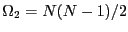
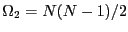

Next: Making Observations: The Ergodic
Up: Statistical Mechanics: A Brief
Previous: Statistical Mechanics: A Brief
A microstate is a full specification of all degrees of freedom of a
system. A system may be conveniently defined as having  degrees of
freedom confined to a volume
degrees of
freedom confined to a volume  . In general, microscopic
degrees of freedom are quantum numbers. The index
. In general, microscopic
degrees of freedom are quantum numbers. The index  in
Eq. 1 runs over all unique combination of
quantum number values. There is a spectrum of energy
eigenstates for any system given by
in
Eq. 1 runs over all unique combination of
quantum number values. There is a spectrum of energy
eigenstates for any system given by
where is the Hamiltonian,
is
shorthand (``ket'' notation) for the system wavefunction in state
, and is the energy of state . In contrast to model
systems usually considered in elementary quantum mechanics, the number
of distinct microstates of systems of particles that
have the same energy is very large, and this set of
eigenstates is in practice impossible to obtain explicitly. This is
indeed why we must instead treat this set statistically. We
refer to the number of states that satisfy a given energy as the
degeneracy of the energy level, denoted :
The many ``equivalent'' states numbering  is called
a microcanonical ensemble.
is called
a microcanonical ensemble.
The Ising spin lattice is a simple statistical mechanical model
with discrete energy levels which we can now introduce to gain some
understanding of what it means to say  is ``large.'' Imagine a
linear array of spins, each pointing either ``up'' or ``down.''
is ``large.'' Imagine a
linear array of spins, each pointing either ``up'' or ``down.''
Let us suppose that the Hamiltonian of this system is given by
where  is -1 if spin
is -1 if spin  is ``down'' and +1 if spin is
``up,'' and is some unit of energy. The ground state, the state
with the lowest energy, has all spins down, so . The
next state up has one spin up, but there are possible microstates
that have this energy: . The next state up has two
spins, and there are such microstates:
. For
is ``down'' and +1 if spin is
``up,'' and is some unit of energy. The ground state, the state
with the lowest energy, has all spins down, so . The
next state up has one spin up, but there are possible microstates
that have this energy: . The next state up has two
spins, and there are such microstates:
. For  spins flipped, there are
distinct microstates. Thus we see that working with for
statistical mechanical systems means working with enormous
numbers.
spins flipped, there are
distinct microstates. Thus we see that working with for
statistical mechanical systems means working with enormous
numbers.
Although quantum mechanics tells us that atomic systems have discrete
energy levels, when systems contain very large numbers of atoms, these
energy levels become so closely spaced relative to their span that
they may effectively be considered a continuum. We can thus pass into
a classical (as opposed to quantum mechanical) representation,
where the microstate for a system of particles is specified by a
point in a -dimensional phase space:
We can denote the number of states in a microcanonical ensemble for a classical system using the Dirac delta function:
The microcanonical ensemble represents a hyperdimensional surface in
the phase space dimensioned by particles with positions limited by
the extent of . The factorial in Eq. 5,
, takes into account that the particles are indistingishable; that is, ordering particle labels is not important.
is Planck's constant; note that it has units of
(length)(momentum). Think of it as a quantum-mechanically-required
``mesh discretization'' for continuous space (it arises due to the
Heisenberg uncertainty relation). It also nondimensionalizes
the partition function. We will encounter it again in the next
section, but we will also see why these ``prefactors'' are not
essential ingredients of most molecular simulations.
You may wonder why there seem to be two viewpoints of statistical
mechanics, quantum and classical. First, there really aren't two
viewpoints: the classical picture is an approximation of the more
general quantum mechanical picture. But statistical mechanics as a
discipline was first formalized by Gibbs and Boltzmann before
quantum mechanics was widely accepted, so it dealt necessarily with
systems of classical particles obeying Newtonian equations of motion;
that is, on classical mechanics. There appears to be a general
concensus that it is easier to introduce statistical mechanical
concepts using the ``sum-over-states'' notation of quantum statistical
mechanics, rather than the apparently more cumbersome (and anyway
approximate) ``integral-over-phase-space'' notation of classical
statistical mechanics.
Next: Making Observations: The Ergodic
Up: Statistical Mechanics: A Brief
Previous: Statistical Mechanics: A Brief
cfa22@drexel.edu